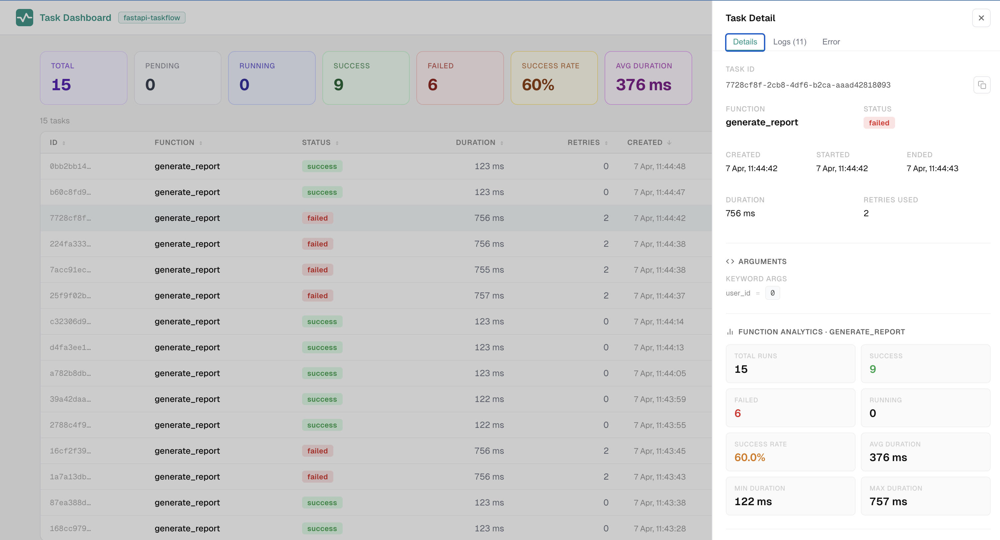

Dashboard¶
fastapi-taskflow includes a live admin dashboard at /tasks/dashboard (or whatever path you configure on TaskAdmin).

Mounting¶
The dashboard is included automatically when you use TaskAdmin:
Custom path:
Features¶
- Live task table updated over SSE with no polling and no page refresh
- Metrics row: total, pending, running, success, failed, interrupted, cancelled, success rate, avg duration
- Search bar filters the table by task ID or function name across all pages
- Status filter and function filter dropdowns, including the cancelled status
- Time-range filter with custom value and unit (minutes, hours, days)
- Export CSV downloads the current filtered and sorted view as a
.csvfile - Clear history button deletes completed tasks older than a chosen window
- Sortable columns with sort preference persisted across reloads
- Pagination at 30 tasks per page
- Task detail slide-in panel with tabs: Details, Logs, Error
- Copy task ID to clipboard from any table row or the detail panel
- Pause live updates, buffers incoming SSE events and shows a new-task count
- Bulk retry: select multiple failed or interrupted tasks and retry them in one click
- Cancel button on pending tasks in the detail panel
- Dead Letters tab showing only failed tasks with bulk replay controls
- Audit tab showing a log of retry and cancel actions, visible when auth is configured
Tabs¶
View¶
The live task table. Shows all task runs with their status, duration, retries, and error summary. Clicking a row opens the detail panel.
Dead Letters¶
Shows only tasks with status failed, sorted newest first. The tab badge shows the current failed count.
Time-window replay. A toolbar above the table lets you pick a window (last 1 hour, 6 hours, 24 hours, 7 days, or all time) and click Replay window. A confirmation modal summarises what will run before anything is dispatched. Each matched task is re-enqueued with its original function, args, and kwargs. The result is reported as a toast.
Selective replay. Each row has a checkbox. Checking one or more rows shows a bulk bar with a Replay selected button that re-enqueues only the checked tasks. The selection is cleared automatically after dispatch.
Both replay actions are recorded in the audit log with action type bulk_retry.
Schedules¶
Lists all functions registered with @task_manager.schedule(). Shows the trigger expression (interval in seconds or cron string), the next scheduled run time, and the status of the most recent run.
Tasks¶
Lists all functions registered with @task_manager.task() or @task_manager.schedule(). Each card shows the function name and its configuration: retry count, retry delay, backoff multiplier, and flags for persist and requeue_on_interrupt.
Audit¶
Shows a log of retry and cancel actions taken via the dashboard or API. Each entry records the timestamp, action type, affected task ID, and the username of whoever performed the action. Only visible when auth is configured on TaskAdmin.
Search and filters¶
The search bar sits below the metrics row and spans the full width of the page. It filters the task table in real time as you type. The search matches against both the task ID and the function name. The search term is persisted across page reloads via localStorage.
The status and function dropdowns narrow the table further. All active filters combine: a task must pass every active filter to appear in the table.
Exporting tasks¶
The Export CSV button downloads the current filtered and sorted view as a .csv file. The export reflects whatever filters are active at the time you click. The file is named tasks-YYYY-MM-DD.csv.
Columns: ID, Function, Status, Duration (ms), Retries, Created, Error.
Task detail panel¶
Clicking any row opens a slide-in detail panel. The panel shows:
- Task ID with a copy-to-clipboard button
- Function name and current status
- Timestamps: created, started, ended
- Duration and retries used
- Task arguments (when
display_func_args=True) - Function analytics: total runs, success/failed counts, success rate, avg/min/max/P95 duration for the same function across all recorded runs
- Five most recent runs of the same function
The panel also shows action buttons depending on the task's current status:
| Status | Action shown |
|---|---|
pending |
Cancel button. Sets status to cancelled immediately. |
running |
Cancel button. Sends a cancellation signal to the asyncio task. A note explains that sync tasks cannot be interrupted mid-thread. |
failed or interrupted |
Retry button. Creates a new task with the same function and arguments. |
The Logs and Error tabs appear only when the task has data for them.
Cancelling tasks¶
Both pending and running tasks show a Cancel task button in the detail panel. For running tasks a note explains the sync-task limitation.
Via the API:
Response:
For pending tasks the status is set to cancelled immediately. For running async tasks the asyncio task receives a cancellation signal and the status transitions to cancelled once the executor handles the interruption. Sync tasks (functions running in a thread pool) stop being awaited but the underlying thread runs to completion. The cancel action is recorded in the audit log.
Retrying tasks¶
Failed and interrupted tasks show a Retry this task button in the detail panel. Clicking it creates a new task with a fresh task ID using the same function, args, and kwargs as the original. The original record stays in history unchanged.
Interrupted tasks show a warning that the function may have already partially executed. Only retry if you know the function is safe to run again.
Via the API:
Response:
The retry will fail with 409 if the function is no longer registered in the current process.
Bulk retry¶
Retry a specific set of tasks by ID:
curl -X POST http://localhost:8000/tasks/bulk-retry \
-H "Content-Type: application/json" \
-d '{"task_ids": ["uuid-1", "uuid-2"]}'
Response:
{
"dispatched": 2,
"skipped": 0,
"results": [
{"original_task_id": "uuid-1", "new_task_id": "new-uuid-1"},
{"original_task_id": "uuid-2", "new_task_id": "new-uuid-2"}
]
}
Tasks that are not found, not in a retryable status, or whose function is no longer registered are counted in skipped and do not produce an error.
Replay by time window¶
Retry all failed tasks created within a time window:
# Last 6 hours
curl -X POST "http://localhost:8000/tasks/retry-failed?since=6h"
# Last 7 days, one function only
curl -X POST "http://localhost:8000/tasks/retry-failed?since=7d&func_name=send_email"
# All time
curl -X POST "http://localhost:8000/tasks/retry-failed?since=all"
The since parameter accepts <N>h (hours), <N>d (days), or all. The optional func_name parameter limits replay to one function. The response has the same shape as /bulk-retry.
Both bulk endpoints record a bulk_retry entry in the audit log.
Audit log¶
Every retry and cancel action is recorded with the timestamp, actor username, and the affected task ID. The last 1000 entries are kept in memory.
Via the API:
Response:
[
{
"entry_id": "...",
"action": "cancel",
"task_id": "...",
"actor": "alice",
"timestamp": "2024-01-15T10:30:00Z",
"detail": {}
},
{
"entry_id": "...",
"action": "retry",
"task_id": "...",
"actor": "bob",
"timestamp": "2024-01-15T10:28:00Z",
"detail": {"new_task_id": "..."}
},
{
"entry_id": "...",
"action": "bulk_retry",
"task_id": "bulk",
"actor": "alice",
"timestamp": "2024-01-15T10:25:00Z",
"detail": {"since": "6h", "dispatched": 4, "skipped": 1}
}
]
Action types: retry, cancel, bulk_retry. Bulk retry entries use "task_id": "bulk" and record the window or task IDs along with the dispatched and skipped counts in detail.
When auth is not configured, actor is always "anonymous". The Audit tab in the dashboard is only shown when auth is configured.
Automatic retention¶
Old terminal records can be pruned automatically on a schedule:
Or via TaskAdmin to override the manager's setting at mount time:
Pruning runs approximately every 6 hours during the snapshot loop and removes records with status success, failed, or cancelled whose end_time is older than the configured number of days. Pending and running tasks are never deleted.
The same action is available on demand via the API or the Clear history button in the dashboard.
Showing task arguments¶
When enabled, task arguments are stored and shown in the detail panel. Disable if arguments may contain sensitive data.
Poll interval¶
The SSE stream wakes up immediately on any local task mutation. It also wakes on a configurable interval to pick up completed tasks from other instances that have flushed to the shared backend.
When no backend is configured, the interval is used only to send a keep-alive comment.
Multi-instance deployments¶
When running multiple instances behind a load balancer, the dashboard shows the live tasks for whichever instance the SSE stream is connected to. Completed tasks from all instances are visible via the shared backend.
For consistent live task visibility, route dashboard traffic to a single instance using sticky sessions. See the multi-instance guide for details.
Authentication¶
The dashboard and all task API endpoints can be protected with login. See the Authentication guide for full details.
Endpoints¶
All routes are relative to the path you configure (default /tasks).
| Method | Path | Description |
|---|---|---|
GET |
/tasks |
JSON list of all tasks |
GET |
/tasks/metrics |
JSON aggregated statistics |
GET |
/tasks/audit |
JSON audit log |
GET |
/tasks/{task_id} |
JSON single task detail |
POST |
/tasks/{task_id}/retry |
Retry a failed or interrupted task |
POST |
/tasks/{task_id}/cancel |
Cancel a pending task |
POST |
/tasks/bulk-retry |
Retry a specific list of tasks by ID |
POST |
/tasks/retry-failed |
Retry all failed tasks within a time window |
DELETE |
/tasks/history |
Delete completed tasks older than a time window |
GET |
/tasks/dashboard |
HTML dashboard |
GET |
/tasks/dashboard/stream |
SSE event stream |
SSE event format¶
The dashboard subscribes to /tasks/dashboard/stream which emits a single state event on each update:
The client re-renders the full table on each event. There is no partial update.